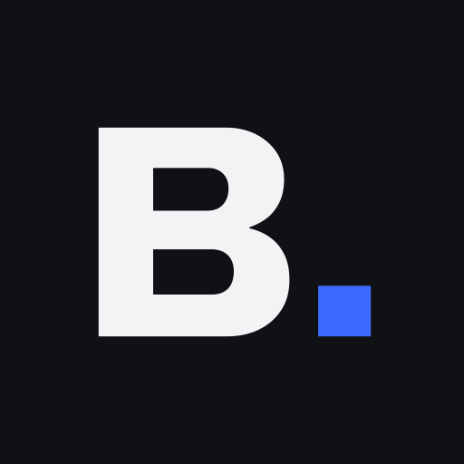

512 · maskableZasady
--bn-ink-900 działa na jasnych i ciemnych kartach<head> · assets/favicon/
<link rel="icon" href="/favicon.ico" sizes="32x32"> <link rel="icon" href="/favicon.svg" type="image/svg+xml"> <link rel="apple-touch-icon" href="/apple-touch-icon.png"> <link rel="manifest" href="/site.webmanifest">